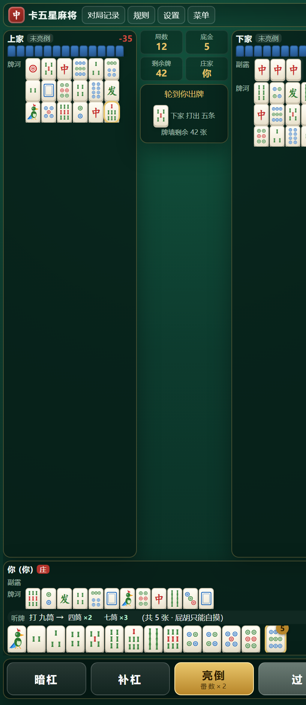
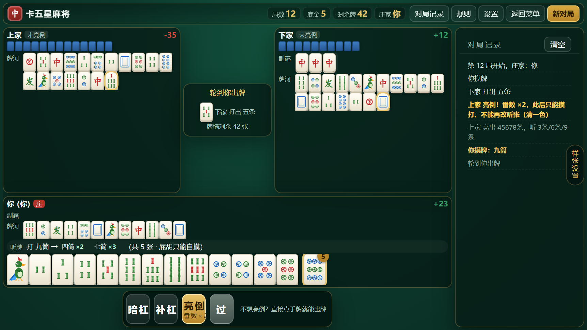

卡五星 · 手机版样张
两张样张都是假数据、不接游戏逻辑，但用的是真实牌面（同一套 SVG），所以牌就是最终效果。
手机上直接点开看；电脑上会自动等比缩放居中。
竖屏样张 · 390×844
顶栏一行 · 上家 | 四个方框 + 中央信息 | 下家 · 你在下方 ·
对局记录收进按钮（点一下开悬浮窗）
重点看：手牌够不够大、信息够不够、拇指好不好按。

横屏样张 · 844×390
等同电脑版：顶栏（四个方框 + 按钮）· 上家 | 中央 | 下家 · 你在下方 · 右侧对局记录
重点看：横屏能不能一眼看清三家、手牌多大合适。

两张样张里都可以：点手牌（抬起 + 顶部确认条，再点一次才打出）· 长按手牌（看「打这张听什么」）·
点「亮倒」（风险确认悬浮窗）· 点「胡」（结算悬浮窗）· 顶部「对局记录 / 规则 / 设置」·
右边缘竖条「样张设置」切换 状态（正常 / 上家亮倒 / 我亮倒）· 手牌大小（紧凑 / 标准 / 大字 / 两行）· 牌河（完整 / 精简）。